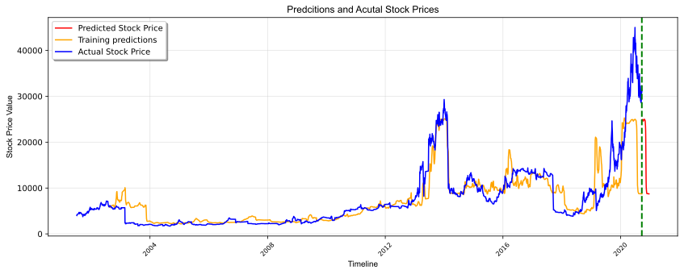

Training set shape == (3481, 9)
All timestamps == 3481
Featured selected: ['<HIGH>', '<LOW>', '<CLOSE>', '<OPEN>', '<LAST>', '<VOL>']
Shape of training set == (3481, 6).
array([[ 4040., 4000., 4020., 4001., 4020., 1043051.],
[ 4221., 4221., 4221., 4020., 4221., 2310692.],
[ 4432., 4432., 4432., 4221., 4432., 1497896.],
...,
[ 32930., 30670., 31290., 32280., 31640., nan],
[ 32500., 30000., 30900., 31290., 30190., nan],
[ 30990., 29360., 29930., 30900., 29870., nan]])
array([[-0.58738015],
[-0.56397588],
[-0.53669245],
...,
[ 3.14825136],
[ 3.09265006],
[ 2.89739898]])
X_train shape == (3332, 60, 5).
y_train shape == (3332, 1).
Epoch 1/30
2/11 [====>.........................] - ETA: 44s - loss: 0.4930WARNING:tensorflow:Callbacks method `on_train_batch_end` is slow compared to the batch time (batch time: 0.2214s vs `on_train_batch_end` time: 9.6660s). Check your callbacks.
11/11 [==============================] - ETA: 0s - loss: 0.3061
Epoch 00001: val_loss improved from inf to 1.55036, saving model to weights.h5
11/11 [==============================] - 19s 2s/step - loss: 0.3061 - val_loss: 1.5504
Epoch 2/30
11/11 [==============================] - ETA: 0s - loss: 0.2370
Epoch 00002: val_loss did not improve from 1.55036
11/11 [==============================] - 3s 305ms/step - loss: 0.2370 - val_loss: 1.7610
Epoch 3/30
11/11 [==============================] - ETA: 0s - loss: 0.2153
Epoch 00003: val_loss improved from 1.55036 to 1.39267, saving model to weights.h5
11/11 [==============================] - 4s 375ms/step - loss: 0.2153 - val_loss: 1.3927
Epoch 4/30
11/11 [==============================] - ETA: 0s - loss: 0.1800
Epoch 00004: val_loss did not improve from 1.39267
11/11 [==============================] - 6s 530ms/step - loss: 0.1800 - val_loss: 1.4847
Epoch 5/30
11/11 [==============================] - ETA: 0s - loss: 0.1458
Epoch 00005: val_loss did not improve from 1.39267
11/11 [==============================] - 4s 358ms/step - loss: 0.1458 - val_loss: 2.0493
Epoch 6/30
11/11 [==============================] - ETA: 0s - loss: 0.1729
Epoch 00006: val_loss did not improve from 1.39267
11/11 [==============================] - 3s 291ms/step - loss: 0.1729 - val_loss: 1.4601
Epoch 7/30
11/11 [==============================] - ETA: 0s - loss: 0.1454
Epoch 00007: val_loss improved from 1.39267 to 1.22334, saving model to weights.h5
11/11 [==============================] - 3s 274ms/step - loss: 0.1454 - val_loss: 1.2233
Epoch 8/30
11/11 [==============================] - ETA: 0s - loss: 0.1378
Epoch 00008: val_loss did not improve from 1.22334
11/11 [==============================] - 3s 309ms/step - loss: 0.1378 - val_loss: 1.3002
Epoch 9/30
11/11 [==============================] - ETA: 0s - loss: 0.1306
Epoch 00009: val_loss did not improve from 1.22334
11/11 [==============================] - 4s 319ms/step - loss: 0.1306 - val_loss: 1.3677
Epoch 10/30
11/11 [==============================] - ETA: 0s - loss: 0.2041
Epoch 00010: val_loss did not improve from 1.22334
11/11 [==============================] - 4s 402ms/step - loss: 0.2041 - val_loss: 1.2787
Epoch 11/30
11/11 [==============================] - ETA: 0s - loss: 0.1911
Epoch 00011: val_loss did not improve from 1.22334
11/11 [==============================] - 4s 330ms/step - loss: 0.1911 - val_loss: 1.3674
Epoch 12/30
11/11 [==============================] - ETA: 0s - loss: 0.1513
Epoch 00012: val_loss improved from 1.22334 to 1.00346, saving model to weights.h5
11/11 [==============================] - 4s 360ms/step - loss: 0.1513 - val_loss: 1.0035
Epoch 13/30
11/11 [==============================] - ETA: 0s - loss: 0.1310
Epoch 00013: val_loss did not improve from 1.00346
11/11 [==============================] - 4s 337ms/step - loss: 0.1310 - val_loss: 1.2693
Epoch 14/30
11/11 [==============================] - ETA: 0s - loss: 0.1161
Epoch 00014: val_loss did not improve from 1.00346
11/11 [==============================] - 4s 337ms/step - loss: 0.1161 - val_loss: 1.3064
Epoch 15/30
11/11 [==============================] - ETA: 0s - loss: 0.1002
Epoch 00015: val_loss did not improve from 1.00346
11/11 [==============================] - 3s 248ms/step - loss: 0.1002 - val_loss: 1.2901
Epoch 16/30
11/11 [==============================] - ETA: 0s - loss: 0.0982
Epoch 00016: val_loss did not improve from 1.00346
11/11 [==============================] - 3s 230ms/step - loss: 0.0982 - val_loss: 1.2895
Epoch 17/30
11/11 [==============================] - ETA: 0s - loss: 0.0932
Epoch 00017: val_loss did not improve from 1.00346
11/11 [==============================] - 2s 221ms/step - loss: 0.0932 - val_loss: 1.2538
Epoch 18/30
11/11 [==============================] - ETA: 0s - loss: 0.1043
Epoch 00018: val_loss did not improve from 1.00346
11/11 [==============================] - 2s 211ms/step - loss: 0.1043 - val_loss: 1.2111
Epoch 19/30
11/11 [==============================] - ETA: 0s - loss: 0.1151
Epoch 00019: val_loss did not improve from 1.00346
11/11 [==============================] - 2s 202ms/step - loss: 0.1151 - val_loss: 1.3723
Epoch 20/30
11/11 [==============================] - ETA: 0s - loss: 0.1126
Epoch 00020: val_loss did not improve from 1.00346
11/11 [==============================] - 2s 208ms/step - loss: 0.1126 - val_loss: 1.2194
Epoch 21/30
11/11 [==============================] - ETA: 0s - loss: 0.1009
Epoch 00021: val_loss did not improve from 1.00346
11/11 [==============================] - 2s 199ms/step - loss: 0.1009 - val_loss: 1.2398
Epoch 22/30
11/11 [==============================] - ETA: 0s - loss: 0.1007
Epoch 00022: ReduceLROnPlateau reducing learning rate to 0.004999999888241291.
Epoch 00022: val_loss did not improve from 1.00346
11/11 [==============================] - 2s 208ms/step - loss: 0.1007 - val_loss: 1.2714
Epoch 00022: early stopping
Wall time: 1min 59s
| <OPEN> | |
|---|---|
| 2002-08-18 | 5883.375977 |
| 2002-08-19 | 5848.064941 |
| 2002-08-24 | 5802.728516 |
array([[-0.34902173],
[-0.3535877 ],
[-0.3594499 ],
...,
[ 0.02020596],
[ 0.01923126],
[ 0.01786958]], dtype=float32)
array([[-0.33394167],
[-0.33122625],
[-0.30743407],
...,
[ 3.14825136],
[ 3.09265006],
[ 2.89739898]])

Mean Absolute Error: 0.3041943613825069
Mean Squared Error: 0.31919656165415916
Root Mean Squared Error: 0.5649748327617428
R2 Scrore: 0.6963427455406279